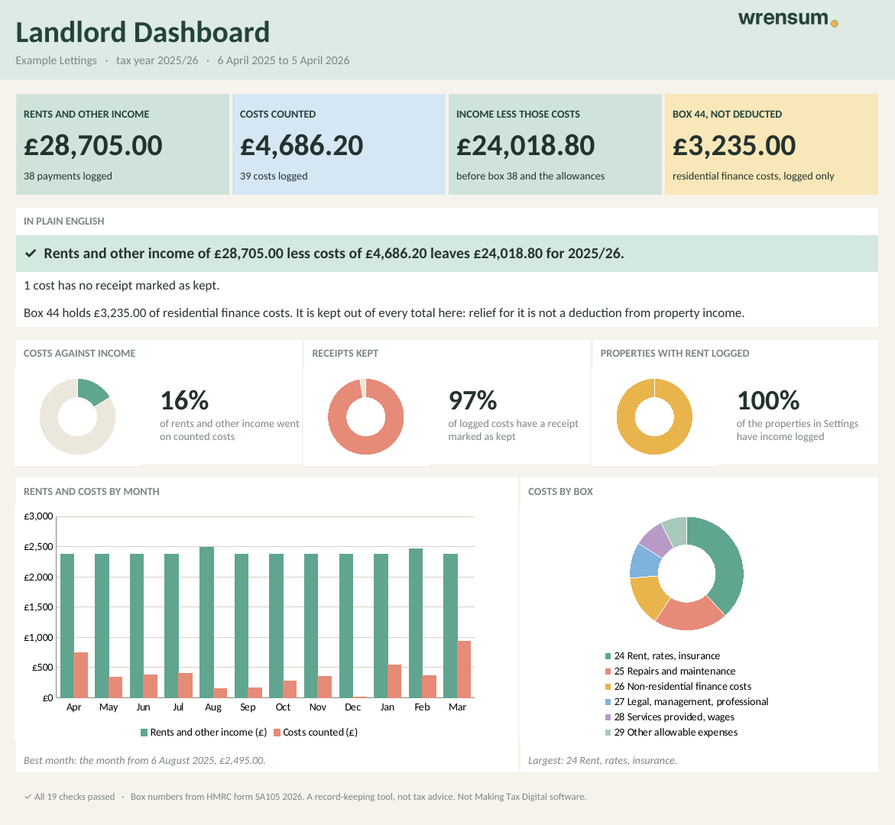
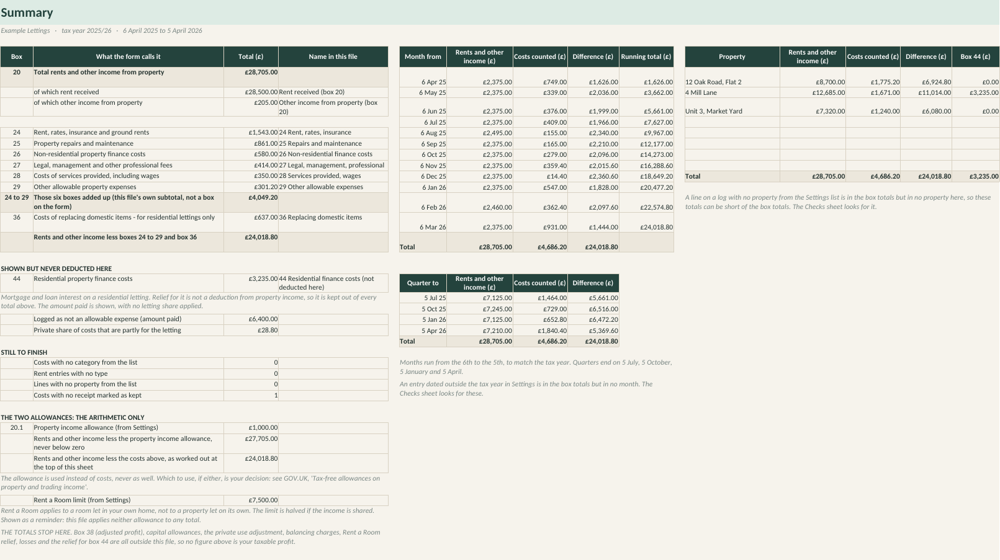
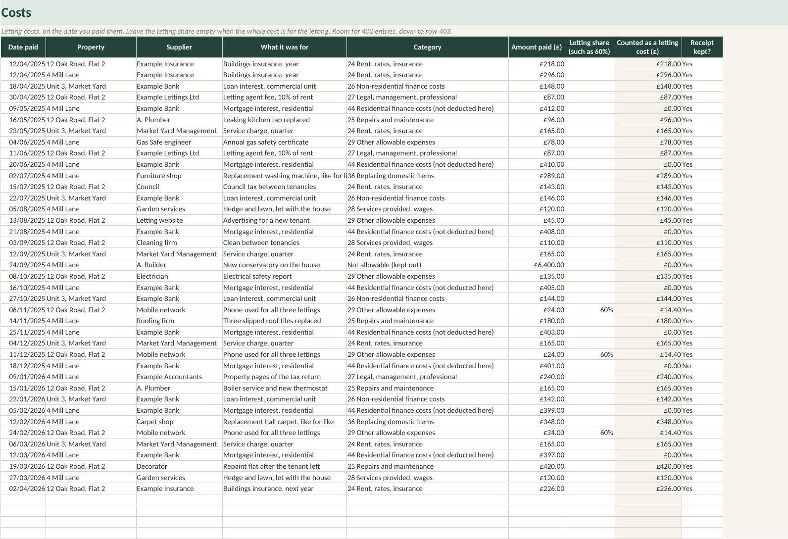
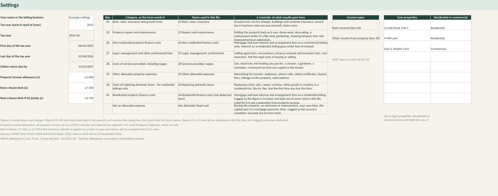

Landlord Rental Income and Expense Tracker
An Excel workbook for UK landlords. Log the rent and the letting costs for each property, and the file turns the tax year into totals under the box numbers printed on HMRC's UK property pages.
Buy for £12One-off payment. One Excel file (.xlsx), delivered as a download. A record-keeping tool: it works out no tax, sends nothing to HMRC and is not tax, legal or accounting advice.

What you get
- A rents log for 300 payments and a costs log for 400 costs, each line tagged to one of up to eight properties
- Category names that are the form's own boxes: 24 rent, rates and insurance; 25 repairs and maintenance; 26 non-residential finance costs; 27 legal, management and professional; 28 services provided and wages; 29 other allowable expenses
- Box 36, costs of replacing domestic items, kept as its own line
- Box 44, residential property finance costs, logged and deliberately never deducted, with the reason said in plain English on the Dashboard
- A letting share column, so a phone bill or a car cost counts only in part
- A summary that shows each box, the six expense boxes added up, the months from the 6th to the 5th, the four quarters, and a line for every property
- A category for anything that is not allowable, such as an extension: logged so the record is complete, kept out of every total
- The property income allowance and the Rent a Room limit shown as arithmetic, with a plain note that each is used instead of costs, never as well
- A dashboard, in light and dark, that gives the year in plain English and counts the costs with no receipt
- A sheet of 19 checks that looks for common slips: a cost with no property, a date outside the tax year, two properties with the same name, an amount typed as text, a sum that has been typed over
Who it is for
People who let one to eight properties in the UK and fill in the property pages of their own tax return. It suits a landlord who keeps the figures in a notebook or a bank statement and wants them added up the way the form asks for them. If you also work for yourself, the Sole Trader Bookkeeping Workbook (£12) does the same job for the self-employment pages.
What it does not do
It stops before box 38. Capital allowances, the private use adjustment, balancing charges, Rent a Room relief, losses brought forward and the relief for residential finance costs are all outside the file, so no figure in it is your taxable profit. It is a record of what came in and what went out, laid out so the figures are easy to find when you fill the form in.
Residential mortgage interest
Interest on a loan for a residential letting is not deducted from property income. The form has a box of its own for it, box 44, and HMRC works the relief out separately. The workbook follows that: you log the interest as you pay it, it appears on its own line and in the per-property table, and it is left out of every total. Interest on a commercial letting is different and goes in box 26, which the file does deduct.



Questions
- Which tax year is it set up for?
- You type the year it starts in, so one copy covers any year. The box numbers and labels in it are those printed on HMRC form SA105 2026, the UK property pages for 6 April 2025 to 5 April 2026, read on GOV.UK on 25 November 2026. HMRC issues new pages each April, so check the labels against the pages for your year.
- Does it work out my tax?
- No. It adds up what you log and stops before box 38. It is not Making Tax Digital software, it sends nothing to HMRC, and it is not tax advice. What you can claim is for you to check on GOV.UK or with an accountant.
- What about furnished holiday lettings?
- There is no separate holiday letting section, because the furnished holiday lettings rules were abolished from 5 April 2025 and that income now forms part of the UK property business (SA105 Notes 2026, read on GOV.UK on 25 November 2026).
- How many properties can I track?
- Eight. Name each one in Settings and then pick it from a list on every line. The Summary gives each property its own row of rent, costs and what is left.
- What if a cost covers more than one property?
- Split it across two lines, one per property, or log it against the property it mostly belongs to and say so in the description. The file has no way of splitting one line between properties.
- Does it handle joint ownership?
- Not on its own. Log your own share of the rent and of the costs. The form has a box to tick for jointly let property; the file does not fill the form in for you.
- Can I use it for more than one year?
- Yes. Keep a blank copy and save a new copy for each tax year.
- What do I need to open it?
- Microsoft Excel. The file has also been tested in LibreOffice Calc. It contains no macros.
- Are the figures in it real?
- No. It comes with three invented properties over a full tax year to show the format. You clear the example rows and type your own.
Free to use first
The rental yield calculator works out the gross and net yield on a property and what is left each month before tax and mortgage.